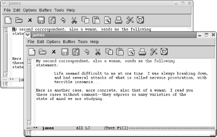
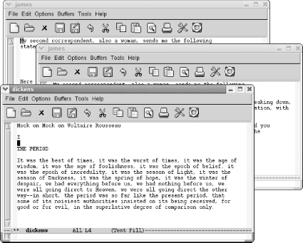

{% include JB/setup %}
{% raw %}
<div>
<div class="book" xml:lang="en"><div class="book"><div class="book"><div class="book"><h1 class="title"><a id="gnu3-CHP-4-SECT-4" class="calibre1"></a>Working with Frames</h1></div></div></div><p class="copyright">By now you know that Emacs calls GUI windows
"frames." In this section,
we'll cover how to create frames, navigate between
frames, and delete frames.</p><div class="book" xml:lang="en"><div class="book"><div class="book"><div class="book"><h2 class="title1"><a id="gnu3-CHP-4-SECT-4.1" class="calibre1"></a>Creating a New Frame</h2></div></div></div><p class="copyright">To open a new frame,
<a id="gnu3-CHP-4-ITERM-2030" class="calibre2"></a>type
<span><strong class="calibre5">C-x 5 2</strong></span> (for <span><strong class="calibre5">make-frame</strong></span>). Emacs makes a new frame
containing the current buffer and puts it on top of the current
frame.</p><p class="copyright">If your new frame completely overlaps your current frame, you may
need to size the new frame to tell them
<a id="gnu3-CHP-4-ITERM-2031" class="calibre2"></a>
               <a id="gnu3-CHP-4-ITERM-2032" class="calibre2"></a>apart.
For a more convenient solution, add these lines to your
<span><em class="calibre7">.emacs</em></span> file:</p><a id="I_4_tt123" class="calibre2"></a><pre class="programlisting">(setq initial-frame-alist '((top . 10) (left . 30)
                            (width . 90) (height . 50)))
(setq default-frame-alist '((width . 80) (height . 45)))</pre><p class="copyright">These lines set up sizes for the width and height of Emacs frames.
The first frame is the size set in <span><strong class="calibre5">initial-frame-alist</strong></span> (in this example, 90
characters wide by 50 lines high with top and left defining an
inset), and subsequent frames, specified by <span><strong class="calibre5">default-frame-alist</strong></span>, will be 80 characters
wide and 45 lines high. Depending on your display, you can make these
numbers smaller or larger.</p><p class="copyright">Here we edit a bit of Henry James.</p><div class="book"><a id="ch04-11-fm2xml" class="calibre2"></a><table class="calibre8"><colgroup class="calibre9"><col class="calibre10"/></colgroup><tbody class="calibre15"><tr class="calibre12"><td class="calibre17">
                           <p class="copyright">Type: <span><strong class="calibre5">C-x 5 2</strong></span>
                           </p>
                        </td></tr><tr class="calibre12"><td class="calibre17">
                           <p class="copyright">
                              </p><div class="book"><div class="mediaobject"><a id="I_4_tt124" class="calibre2"></a></div></div><p class="copyright">
                           </p>
                        </td></tr><tr class="calibre12"><td class="calibre19">
                           <p class="copyright">Emacs opens a new frame titled <code class="calibre21">james</code>
                           </p>
                        </td></tr></tbody></table></div><div class="sidebar"><a id="gnu3-CHP-4-SIDEBAR-1" class="calibre33"></a><p class="title5"><b class="calibre25">Frame Names</b></p><p class="calibre34">Note the title of your
<a id="gnu3-CHP-4-ITERM-2033" class="calibre2"></a>
                  <a id="gnu3-CHP-4-ITERM-2034" class="calibre2"></a>new
frame. The first frame in your session, your initial Emacs frame,
displays <code class="calibre21">Emacs@</code>
                  <em class="calibre7"><code class="calibre21">system
name</code></em> at the top (or Emacs's best guess
at the system name). Any other frames you create display the buffer
name at the top. In fact, once you have multiple frames,
<span><em class="calibre7">all frames</em></span> display the buffer name as their
title. If you delete all frames but one, the title once again reverts
to <code class="calibre21">Emacs@</code>
                  <em class="calibre7"><code class="calibre21">system name</code></em>.</p></div><p class="copyright">Let's say we want to open a frame on our
<code class="calibre21">dickens</code> buffer.</p><div class="book"><a id="ch04-13-fm2xml" class="calibre2"></a><table class="calibre8"><colgroup class="calibre9"><col class="calibre10"/></colgroup><tbody class="calibre15"><tr class="calibre12"><td class="calibre17">
                           <p class="copyright">Type: <span><strong class="calibre5">C-x 5 f dickens Enter</strong></span>
                           </p>
                        </td></tr><tr class="calibre12"><td class="calibre17">
                           <p class="copyright">
                              </p><div class="book"><div class="mediaobject"><a id="I_4_tt125" class="calibre2"></a></div></div><p class="copyright">
                           </p>
                        </td></tr><tr class="calibre12"><td class="calibre19">
                           <p class="copyright">Emacs opens a new frame on <code class="calibre21">dickens</code>.</p>
                        </td></tr></tbody></table></div><p class="copyright">If you type <span><strong class="calibre5">C-x b</strong></span> to move to another
buffer, the name at the top of the frame changes to the new
buffer's name (and on Linux, it shows the path as
well). To move to a buffer and put it in a new frame, type <span><strong class="calibre5">C-x 5 b</strong></span>. You might have guessed that one.</p></div><div class="book" xml:lang="en"><div class="book"><div class="book"><div class="book"><h2 class="title1"><a id="gnu3-CHP-4-SECT-4.2" class="calibre1"></a>Moving Between Frames</h2></div></div></div><p class="copyright">You can move between frames
<a id="gnu3-CHP-4-ITERM-2035" class="calibre2"></a>
               <a id="gnu3-CHP-4-ITERM-2036" class="calibre2"></a>in several ways. You can use the mouse to
select a frame or press <span><strong class="calibre5">C-x 5 o</strong></span> to
go to another frame. To see a list of current frames, select
<span><strong class="calibre5">Frames</strong></span> from the <span><strong class="calibre5">Buffers</strong></span> menu. (If you have only one frame, the
<span><strong class="calibre5">Frames</strong></span> option does not appear on
this menu.)</p></div><div class="book" xml:lang="en"><div class="book"><div class="book"><div class="book"><h2 class="title1"><a id="gnu3-CHP-4-SECT-4.3" class="calibre1"></a>Deleting and Minimizing Frames</h2></div></div></div><p class="copyright">To get rid of a frame, press <span><strong class="calibre5">C-x 5
0</strong></span>. Emacs deletes
<a id="gnu3-CHP-4-ITERM-2037" class="calibre2"></a>
               <a id="gnu3-CHP-4-ITERM-2038" class="calibre2"></a>
               <a id="gnu3-CHP-4-ITERM-2039" class="calibre2"></a>
               <a id="gnu3-CHP-4-ITERM-2040" class="calibre2"></a>the frame you are in. Deleting a frame,
like deleting a window, affects only the display. The underlying
buffer is still active, and you can move to it by typing <span><strong class="calibre5">C-x b</strong></span>.</p><p class="copyright">If you try to use <span><strong class="calibre5">C-x 5 0</strong></span> to delete
the only frame that is left, Emacs won't do it. To
exit Emacs, type <span><strong class="calibre5">C-x C-c</strong></span> or close
the frame as you would any other GUI window using the mouse.</p><p class="copyright">To minimize a frame, either minimize it in the usual way or press
<span><strong class="calibre5">C-z</strong></span>. <a class="calibre2" href="ch04s04.html#gnu3-CHP-4-TABLE-1" title="Table 4-1. Frame commands">Table 4-1</a>
summarizes the frame commands.</p><div class="book"><a id="gnu3-CHP-4-TABLE-1" class="calibre2"></a><p class="title2"><b class="calibre25">Table 4-1. Frame commands</b></p><div class="table-contents"><table summary="Frame commands" class="calibre8"><colgroup class="calibre9"><col class="calibre10"/><col class="calibre10"/><col class="calibre10"/></colgroup><thead class="calibre11"><tr class="calibre12"><th class="calibre26">
                           <p class="copyright">
                              <span><strong class="calibre5">Keystrokes</strong></span>
                           </p>
                        </th><th class="calibre26">
                           <p class="copyright">
                              <span><strong class="calibre5">Command name</strong></span>
                           </p>
                        </th><th class="calibre27">
                           <p class="copyright">
                              <span><strong class="calibre5">Action</strong></span>
                           </p>
                        </th></tr></thead><tbody class="calibre15"><tr class="calibre12"><td class="calibre28">
                           <p class="copyright">
                              <span><strong class="calibre5">C-x 5 o</strong></span>
                              <span><em class="calibre7">Buffers</em></span>
                              <span>→</span> 
                              <span><em class="calibre7">Frames</em></span>
                           </p>
                        </td><td class="calibre28">
                           <p class="copyright">
                              <span><strong class="calibre5">other-frame</strong></span>
                           </p>
                        </td><td class="calibre29">
                           <p class="copyright">Move to other frame.</p>
                        </td></tr><tr class="calibre12"><td class="calibre28">
                           <p class="copyright">
                              <span><strong class="calibre5">C-x 5 0</strong></span>
                              <span><em class="calibre7">File</em></span>
                              <span>→</span> 
                              <span><em class="calibre7">Delete Frame</em></span>
                           </p>
                        </td><td class="calibre28">
                           <p class="copyright">
                              <span><strong class="calibre5">delete-frame</strong></span>
                           </p>
                        </td><td class="calibre29">
                           <p class="copyright">Delete current frame.</p>
                        </td></tr><tr class="calibre12"><td class="calibre28">
                           <p class="copyright">
                              <span><strong class="calibre5">C-x 5 2</strong></span>
                              <span><em class="calibre7">File</em></span>
                              <span>→</span> 
                              <span><em class="calibre7">New Frame</em></span>
                           </p>
                        </td><td class="calibre28">
                           <p class="copyright">
                              <span><strong class="calibre5">make-frame</strong></span>
                           </p>
                        </td><td class="calibre29">
                           <p class="copyright">Create a new frame on the current buffer.</p>
                        </td></tr><tr class="calibre12"><td class="calibre28">
                           <p class="copyright">
                              <span><strong class="calibre5">C-x 5 f</strong></span>
                           </p>
                        </td><td class="calibre28">
                           <p class="copyright">
                              <span><strong class="calibre5">find-file-other-frame</strong></span>
                           </p>
                        </td><td class="calibre29">
                           <p class="copyright">Find file in a new frame.</p>
                        </td></tr><tr class="calibre12"><td class="calibre28">
                           <p class="copyright">
                              <span><strong class="calibre5">C-x 5 r</strong></span>
                           </p>
                        </td><td class="calibre28">
                           <p class="copyright">
                              <span><strong class="calibre5">find-file-read-only-other-frame</strong></span>
                           </p>
                        </td><td class="calibre29">
                           <p class="copyright">Finds a file in a new frame, but it is read-only.</p>
                        </td></tr><tr class="calibre12"><td class="calibre30">
                           <p class="copyright">
                              <span><strong class="calibre5">C-x 5 b</strong></span>
                           </p>
                        </td><td class="calibre30">
                           <p class="copyright">
                              <span><strong class="calibre5">switch-to-buffer-other-frame</strong></span>
                           </p>
                        </td><td class="calibre31">
                           <p class="copyright">Make frame and display other buffer in it.</p>
                        </td></tr></tbody></table></div></div><br class="book"/></div></div></div>

{% endraw %}

